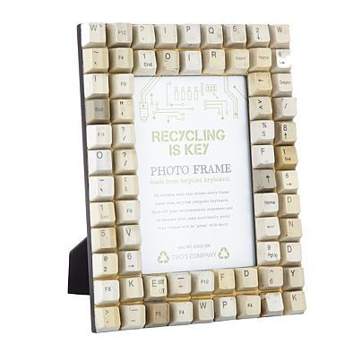
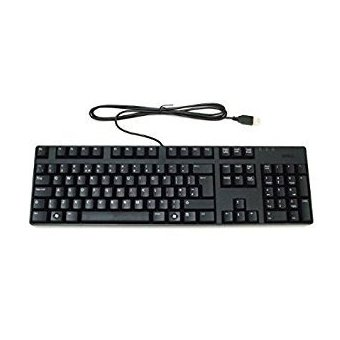
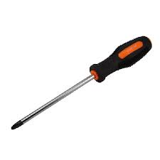
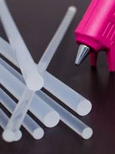
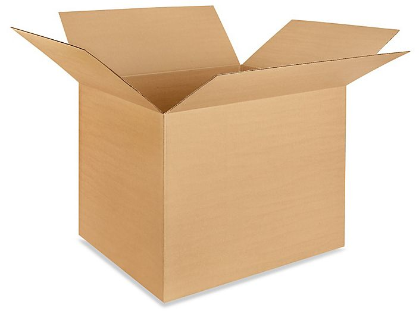
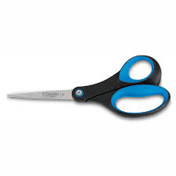
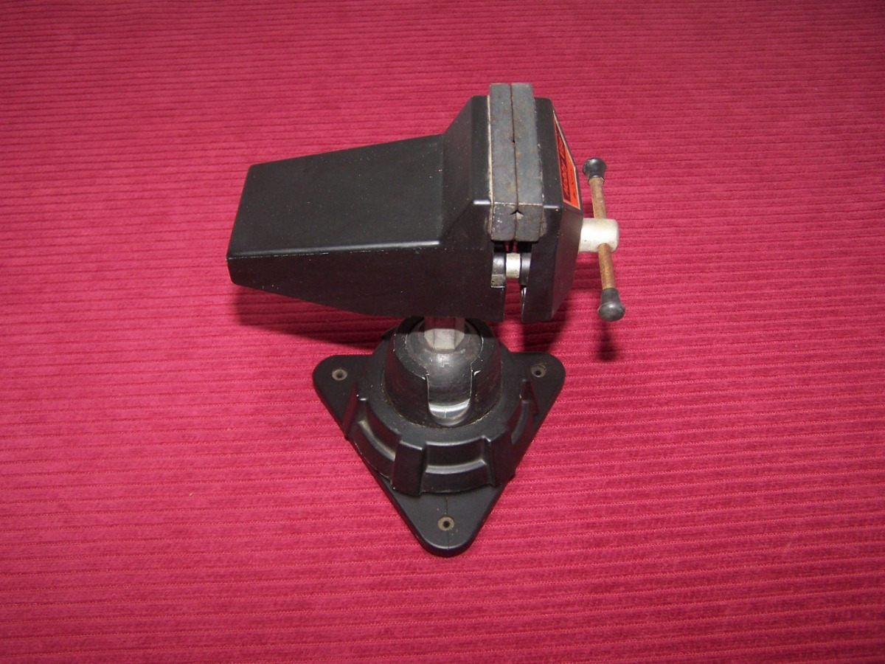
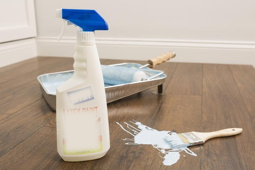

PORTARETRATO HECHO CON TECLAS DE COMPUTADORA
Materiales
-  Un teclado de computadora
- Destornillador
- Silicona en barra
- Cartón
- Tijera
- Prensa
- Removedor de superficies
 Pintura a elección
Pintura a elección
Instrucciones
- Desarmar el teclado y sacar las teclas con el mismo destornillador
- Cortar con la cortadora las irregularidades de la tecla para que se adiera facilmente a las superficies
- Para cortar las teclas facilmente utilizaremos una prensa para que agarre cada tecla
- Si usted desea que las teclas se vean como nuevas puede lavarlas con el liquido de "Removedor de Superficies"(manejelo con guantes por su seguridad)
- Cortar con la tijera el cartón segun las medidas que a usted le convengan
- Si usted gusta puede pintar el cartón con la pintura que eligio
- Y por ultimo con la silicona en barra pegamos las teclas en el cartón